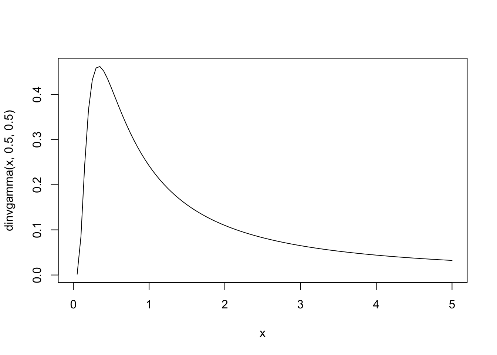
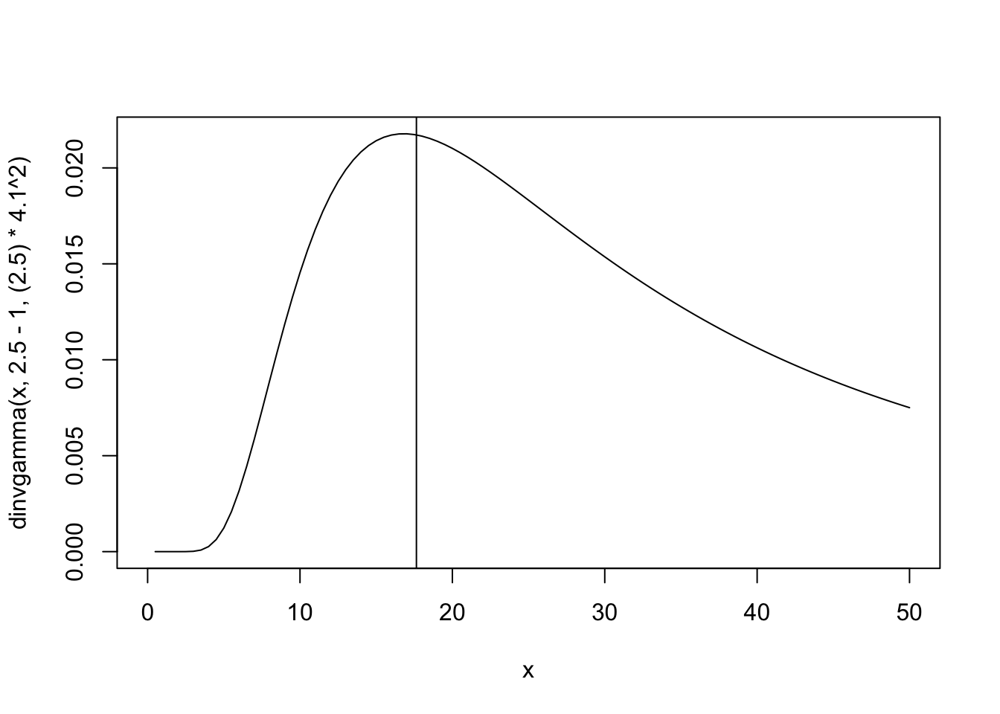

library(mice) # Just used for the nhanes2 data set
library(INLA) # INLA modelling
library(dplyr) # Data wrangling of the results
library(gt) # Tables
library(tidyverse) # Data wrangling and plotting
library(showtext) # Font
library(colorspace) # Color adjustments
library(MCMCpack) # dinvgamma()Missing covariate imputation
In this example, we use the nhanes2 data set from the mice R-package to illustrate how to do missing covariate imputation in INLA by using a measurement error model. As noted in the paper, the nhanes2 data set is really small, it only has 25 observations and 9 of them are missing, so this is not really a good application of this. However, we chose to use this as it is a data set that is commonly used in other missing data applications in INLA, and so we reasoned that using the same data set would make it easier to compare the implementations.
Loading packages
inla.setOption(num.threads = "1:1")Loading and preparing the data
# Using the nhanes data set found in mice so we can compare to mice:
data(nhanes2)
head(nhanes2) age bmi hyp chl
1 20-39 NA <NA> NA
2 40-59 22.7 no 187
3 20-39 NA no 187
4 60-99 NA <NA> NA
5 20-39 20.4 no 113
6 60-99 NA <NA> 184n <- nrow(nhanes2)
# Manually dummy-code age:
age2 <- ifelse(nhanes2$age == "40-59", 1, 0)
age3 <- ifelse(nhanes2$age == "60-99", 1, 0)
# Center the response and continuous covariates
chl <- scale(nhanes2$chl, scale = FALSE)[,1]
bmi <- scale(nhanes2$bmi, scale = FALSE)[,1]Aim
We want to fit the model
\[ chl \sim \beta_0 + \beta_{age2} age_2 + \beta_{age3} age_3 + \beta_{bmi} bmi + \varepsilon, \] but there is missingness in bmi, so we will consider two different imputation models for this.
Simple imputation model
We first fit a model that is identical to the one in Gómez-Rubio and Rue (2018).
Specifying priors
# Priors for model of interest coefficients
prior.beta = c(0, 0.001) # Gaussian, c(mean, precision)
# Priors for exposure model coefficient
#prior.alpha <- c(26.56, 1/71.07) # Gaussian, c(mean, precision)
# Priors for y, measurement error
prior.prec.y <- c(1, 0.00005) # Gamma
prior.prec.u_c <- c(0.5, 0.5) # Gamma
#prior.prec.x <- c(2.5-1,(2.5)*4.2^2) # Gamma
# Initial values
prec.y <- 1
prec.u_c <- 1
#prec.x <- 1/71.07
prec.x <- 1/71.07Setting up the matrices for the joint model
Y <- matrix(NA, 3*n, 3)
Y[1:n, 1] <- chl # Regression model of interest response
Y[n+(1:n), 2] <- bmi # Error model response
Y[2*n+(1:n), 3] <- rep(0, n) # Exposure model response
beta.0 <- c(rep(1, n), rep(NA, n), rep(NA, n))
beta.bmi <- c(1:n, rep(NA, n), rep(NA, n))
beta.age2 <- c(age2, rep(NA, n), rep(NA, n))
beta.age3 <- c(age3, rep(NA, n), rep(NA, n))
id.x <- c(rep(NA, n), 1:n, 1:n)
weight.x <- c(rep(1, n), rep(1, n), rep(-1, n))
offset.imp <- c(rep(NA, n), rep(NA, n), rep(26.56, n))
#alpha.0 <- c(rep(NA, n), rep(NA, n), rep(1, n))
dd <- data.frame(Y = Y,
beta.0 = beta.0,
beta.bmi = beta.bmi,
beta.age2 = beta.age2,
beta.age3 = beta.age3,
id.x = id.x,
weight.x = weight.x,
offset.imp = offset.imp)INLA formula
formula = Y ~ - 1 + beta.0 + beta.age2 + beta.age3 +
f(beta.bmi, copy="id.x",
hyper = list(beta = list(param = prior.beta, fixed=FALSE))) +
f(id.x, weight.x, model="iid", values = 1:n,
hyper = list(prec = list(initial = -15, fixed=TRUE)))Scaling of ME precision
Since we are not assuming any measurement error here, we need to “turn off” the error model by scaling the error precision to be very large (it makes no difference if we scale the precision only for the observed values or for the observed and missing values).
Scale <- c(rep(1, n), rep(10^12, n), rep(1, n))Fitting the model
model_missing1 <- inla(formula, data = dd, scale = Scale, offset = log(dat$pop),
family = c("gaussian", "gaussian", "gaussian"),
control.family = list(
list(hyper = list(prec = list(initial = log(prec.y),
param = prior.prec.y,
fixed = FALSE))),
list(hyper = list(prec = list(initial = log(prec.u_c),
param = prior.prec.u_c,
fixed = FALSE))),
list(hyper = list(prec = list(initial = log(prec.x),
fixed = TRUE)))
),
control.fixed = list(
mean = list(beta.0 = prior.beta[1],
beta.age2 = prior.beta[1],
beta.age3 = prior.beta[1]),
prec = list(beta.0 = prior.beta[2],
beta.age2 = prior.beta[2],
beta.age3 = prior.beta[2])),
verbose=F)
model_missing1$summary.fixed mean sd 0.025quant 0.5quant 0.975quant mode kld
beta.0 -17.60626 10.93451 -37.971728 -18.03594 5.183261 NA 9.910360e-08
beta.age2 29.24290 16.09734 -4.203562 29.84339 59.318094 NA 9.648499e-08
beta.age3 51.16447 20.73070 7.996870 52.09611 89.369885 NA 1.611619e-07model_missing1$summary.hyperpar mean sd
Precision for the Gaussian observations 0.001036804 0.0004234011
Precision for the Gaussian observations[2] 0.916159737 0.5484311863
Beta for beta.bmi 5.035216083 0.4842624861
0.025quant 0.5quant
Precision for the Gaussian observations 0.0003789667 0.0009755623
Precision for the Gaussian observations[2] 0.2023001516 0.8039241305
Beta for beta.bmi 4.1750752965 5.0067526677
0.975quant mode
Precision for the Gaussian observations 0.002025766 NA
Precision for the Gaussian observations[2] 2.276555004 NA
Beta for beta.bmi 6.082937710 NAMore complex imputation model
This model includes age as a covariate in the imputation model.
Specifying priors
# Priors for model of interest coefficients
prior.beta = c(0, 1e-6) # Gaussian, c(mean, precision)
# Priors for exposure model coefficients
prior.alpha <- c(0, 1e-6) # Gaussian, c(mean, precision)
# Priors for y, measurement error and true x-value precision
# Start by getting a reasonable prior guess for the standard error of the regression and exp. models
summary(lm(chl~bmi+age2+age3))$sigma[1] 29.10126summary(lm(bmi~age2+age3))$sigma[1] 4.160342# Use those values to create reasonable priors:
prior.prec.y <- c(2.5-1,(2.5)*29.1^2) # Gamma
prior.prec.u_c <- c(0.5, 0.5) # Gamma
prior.prec.x <- c(2.5-1,(2.5)*4.2^2) # Gamma
# We can visualize these priors:
curve(dinvgamma(x, 2.5-1,(2.5)*29.1^2), 0, 2000)
abline(v=29.1^2)
curve(dinvgamma(x,2.5-1,(2.5)*4.1^2), 0, 50)
abline(v=4.2^2)
# Initial values
prec.y <- 1/29.1^2
prec.u_c <- 1
prec.x <- 1/4.2^2Setting up the matrices for the joint model
Y <- matrix(NA, 3*n, 3)
Y[1:n, 1] <- chl # Regression model of interest response
Y[n+(1:n), 2] <- bmi # Error model response
Y[2*n+(1:n), 3] <- rep(0, n) # Exposure model response
beta.0 <- c(rep(1, n), rep(NA, n), rep(NA, n))
beta.bmi <- c(1:n, rep(NA, n), rep(NA, n))
beta.age2 <- c(age2, rep(NA, n), rep(NA, n))
beta.age3 <- c(age3, rep(NA, n), rep(NA, n))
id.x <- c(rep(NA, n), 1:n, 1:n)
weight.x <- c(rep(1, n), rep(1, n), rep(-1, n))
alpha.0 <- c(rep(NA, n), rep(NA, n), rep(1, n))
alpha.age2 <- c(rep(NA, n), rep(NA, n), age2)
alpha.age3 <- c(rep(NA, n), rep(NA, n), age3)
dd <- data.frame(Y = Y,
beta.0 = beta.0,
beta.bmi = beta.bmi,
beta.age2 = beta.age2,
beta.age3 = beta.age3,
id.x = id.x,
weight.x = weight.x,
alpha.0 = alpha.0,
alpha.age2 = alpha.age2,
alpha.age3 = alpha.age3)INLA formula
formula = Y ~ - 1 + beta.0 + beta.age2 + beta.age3 +
f(beta.bmi, copy="id.x",
hyper = list(beta = list(param = prior.beta, fixed=FALSE))) +
f(id.x, weight.x, model="iid", values = 1:n,
hyper = list(prec = list(initial = -15, fixed=TRUE))) +
alpha.0 + alpha.age2 + alpha.age3Scaling of ME precision
Since we are not assuming any measurement error here, we need to “turn off” the error model by scaling the error precision to be very large (it makes no difference if we scale the precision only for the observed values or for the observed and missing values).
Scale <- c(rep(1, n), rep(10^12, n), rep(1, n))Fitting the model
model_missing2 <- inla(formula, data = dd, scale = Scale,
family = c("gaussian", "gaussian", "gaussian"),
control.family = list(
list(hyper = list(prec = list(initial = log(prec.y),
param = prior.prec.y,
fixed = FALSE))),
list(hyper = list(prec = list(initial = log(prec.u_c),
param = prior.prec.u_c,
fixed = FALSE))),
list(hyper = list(prec = list(initial = log(prec.x),
param = prior.prec.x,
fixed = FALSE)))
),
control.fixed = list(
mean = list(beta.0 = prior.beta[1],
beta.age2 = prior.beta[1],
beta.age3 = prior.beta[1],
alpha.0 = prior.alpha[1],
alpha.age2 = prior.alpha[1],
alpha.age3 = prior.alpha[1]),
prec = list(beta.0 = prior.beta[2],
beta.age2 = prior.beta[2],
beta.age3 = prior.beta[2],
alpha.0 = prior.alpha[2],
alpha.age2 = prior.alpha[2],
alpha.age3 = prior.alpha[2])),
verbose=F)# Save results:
saveRDS(model_missing2, file = "results/model_missing2.rds")Fitting a complete case model
# Where is bmi missing?
missing_bmi <- is.na(bmi)
dd_naive <- data.frame(Y = chl,
beta.0 = rep(1, length(bmi)),
beta.bmi = bmi,
beta.age2 = age2,
beta.age3 = age3)[!missing_bmi, ]
# Formula
formula <- Y ~ - 1 + beta.0 + beta.age2 + beta.age3 + beta.bmi
# Fit model
model_naive <- inla(formula,
data = dd_naive,
family = c("gaussian"),
control.family = list(
list(hyper = list(prec = list(initial = prec.y,
param = prior.prec.y,
fixed = FALSE)))),
control.fixed = list(
mean = list(beta.0 = prior.beta[1],
beta.age2 = prior.beta[1],
beta.age3 = prior.beta[1],
beta.bmi = prior.beta[1]),
prec = list(beta.0 = prior.beta[2],
beta.age2 = prior.beta[2],
beta.age3 = prior.beta[2],
beta.bmi = prior.beta[2]))
)Results
The posterior means and standard deviations are presented in the table below. Note that the data set is quite small (25 observations where 9 are missing), and so the differing result should not be interpreted too seriously.
| me_adjusted | naive | inla_mcmc | ||||
|---|---|---|---|---|---|---|
| mean | sd | mean | sd | mean | sd | |
| Model of interest | ||||||
| beta.0 | -34.464 | 12.273 | -36.459 | 14.532 | 43.469 | 62.603 |
| beta.age2 | 53.341 | 18.625 | 55.749 | 21.786 | 29.501 | 17.871 |
| beta.age3 | 90.360 | 23.619 | 104.611 | 29.380 | 49.449 | 23.207 |
| Beta for beta.bmi | 6.330 | 0.459 | 6.918 | 2.308 | 4.864 | 2.206 |
| Imputation model | ||||||
| alpha.0 | 1.995 | 1.722 | NA | NA | NA | NA |
| alpha.age2 | -3.137 | 2.721 | NA | NA | NA | NA |
| alpha.age3 | -4.617 | 2.838 | NA | NA | NA | NA |

Model summary
summary(model_missing2)
Call:
c("inla.core(formula = formula, family = family, contrasts = contrasts,
", " data = data, quantiles = quantiles, E = E, offset = offset, ", "
scale = scale, weights = weights, Ntrials = Ntrials, strata = strata,
", " lp.scale = lp.scale, link.covariates = link.covariates, verbose =
verbose, ", " lincomb = lincomb, selection = selection, control.compute
= control.compute, ", " control.predictor = control.predictor,
control.family = control.family, ", " control.inla = control.inla,
control.fixed = control.fixed, ", " control.mode = control.mode,
control.expert = control.expert, ", " control.hazard = control.hazard,
control.lincomb = control.lincomb, ", " control.update =
control.update, control.lp.scale = control.lp.scale, ", "
control.pardiso = control.pardiso, only.hyperparam = only.hyperparam,
", " inla.call = inla.call, inla.arg = inla.arg, num.threads =
num.threads, ", " blas.num.threads = blas.num.threads, keep = keep,
working.directory = working.directory, ", " silent = silent, inla.mode
= inla.mode, safe = FALSE, debug = debug, ", " .parent.frame =
.parent.frame)")
Time used:
Pre = 2.97, Running = 0.257, Post = 0.0215, Total = 3.25
Fixed effects:
mean sd 0.025quant 0.5quant 0.975quant mode kld
beta.0 -34.464 12.273 -58.735 -34.483 -10.088 NA 0
beta.age2 53.341 18.625 16.393 53.350 90.257 NA 0
beta.age3 90.360 23.619 42.855 90.609 136.374 NA 0
alpha.0 1.995 1.722 -1.404 1.989 5.422 NA 0
alpha.age2 -3.137 2.721 -8.547 -3.132 2.243 NA 0
alpha.age3 -4.617 2.838 -10.321 -4.587 0.920 NA 0
Random effects:
Name Model
id.x IID model
beta.bmi Copy
Model hyperparameters:
mean sd 0.025quant 0.5quant
Precision for the Gaussian observations 0.001 0.001 0.000 0.001
Precision for the Gaussian observations[2] 1.822 0.936 0.550 1.637
Precision for the Gaussian observations[3] 0.052 0.014 0.029 0.051
Beta for beta.bmi 6.330 0.459 5.380 6.344
0.975quant mode
Precision for the Gaussian observations 0.003 NA
Precision for the Gaussian observations[2] 4.162 NA
Precision for the Gaussian observations[3] 0.084 NA
Beta for beta.bmi 7.197 NA
Marginal log-Likelihood: -367.03
is computed
Posterior summaries for the linear predictor and the fitted values are computed
(Posterior marginals needs also 'control.compute=list(return.marginals.predictor=TRUE)')References
Gómez-Rubio, V., & Rue, H. (2018). Markov chain Monte Carlo with the integrated nested Laplace approximation. Statistics and Computing, 28, 1033–1051. doi: 10.1007/s11222-017-9778-y